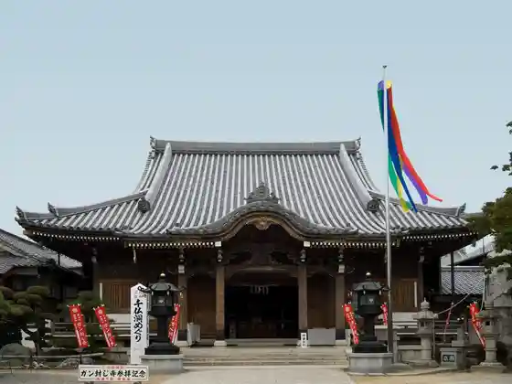

Takeshima
Gamagori, Aichi · 0533-68-3700 · Official / source link
Muryo Tera (Gan Fuji Tera)
Gamagori, Aichi · 0533-57-3865 · Official / source link

Ragunatembosu Ragunashia
Gamagori, Aichi · Official / source link
Sangane Yama Sukai Line Mikawawan Sukai Line
Gamagori, Aichi · 0563-62-3001 · Official / source link
SEASIDE MAGIC in Raguna Gamagori
Gamagori, Aichi · 080-6616-8961 · Official / source link
Sakana Taro Hamayaki Ki Babekyu Raguna Gamagori Mise
Gamagori, Aichi · 0533-59-6668 · Official / source link
Shimajiro Shii Park
Gamagori, Aichi · Official / source link
Botoresu Gamagori
Gamagori, Aichi · 0533-67-6606 · Official / source link
Takeshima Fantajii Kan
Gamagori, Aichi · 0533-66-3888 · Official / source link
Gamagori Kaisen Market
Gamagori, Aichi · 0533-68-7879 · Official / source link
Takeshima Enchi
Gamagori, Aichi · Official / source link
Nabiterasu
Gamagori, Aichi · 0533-79-6526 · Official / source link
Nishiura Onsen Pamu Beach
Gamagori, Aichi · 0533-57-2195 · Official / source link
Asurechikku Park Henna Mori
Gamagori, Aichi · Official / source link
Umibe no Bungaku Memorial Museum
Gamagori, Aichi · 0533-67-0070 · Official / source link
Gamagori Seimei no Umi Science Museum
Gamagori, Aichi · 0533-66-1717 · Official / source link
Nishiura Onsen
Gamagori, Aichi · 0533-57-2195 · Official / source link
Mitani Onsen
Gamagori, Aichi · 0533-68-4744 · Official / source link
Katanohara Onsen
Gamagori, Aichi · 0533-57-0660 · Official / source link
Gamagori Onsen
Gamagori, Aichi · 0533-68-2526 · Official / source link
Takeshima Aquarium
Gamagori, Aichi · 0533-68-2059 · Official / source link
Gamagori Orenji Park
Gamagori, Aichi · 0533-68-2321 · Official / source link